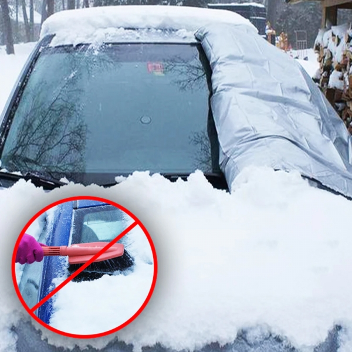
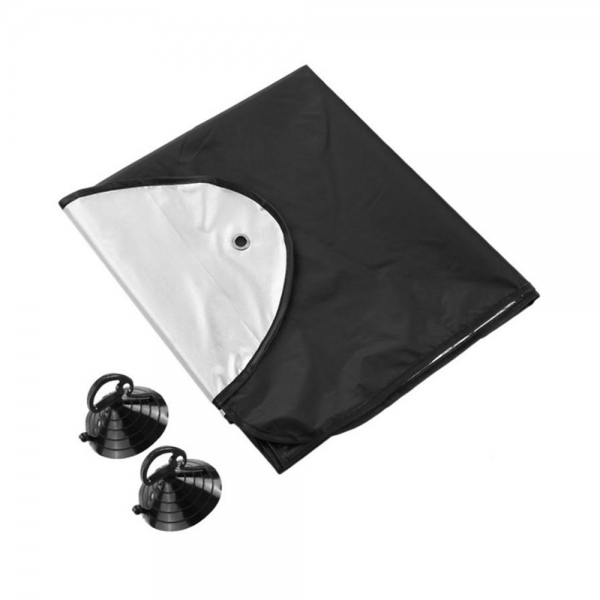

Priekinio stiklo uždangalas
Uždenk vakare.
Ryte – mažiau gramdymo.
Šaltukas – tai priekinio stiklo uždangalas automobiliui, kuris nakvoja lauke. Sniegas nusėda ant uždangalo, o ne ant tavo stiklo.
- ✓ Uždedi per 60 sek. vakare, nuimi per 30 sek. ryte
- ✓ Mažiau laiko šaltyje su grandikliu rankoje
- ✓ Matmenys – 200 × 170 cm (tinkamumo gidas žemiau)
Kaina
🛡️ 14 dienų grąžinimas
Testuota Lietuvos aikštelėse šaltomis naktimis nakčių skaičius tikslinamas
Tas pats rytas. Vėl ir vėl.
Išeini iš namų. Stiklas vėl baltas.
Užvedi variklį, išsitrauki grandiklį ir stovi šaltyje. Pirštai šąla, ledas lūžinėja mažais gabaliukais, o laikas bėga.
Rytoj bus tas pats. Poryt irgi. Ir taip iki kovo.
Tikroji priežastis
Problema prasideda ne ryte
Ji prasideda vakare, kai palieki automobilį su neuždengtu stiklu. Grandiklis, purškalas ir šildymas veikia, bet tik tada, kai ledas jau yra ant stiklo.
Šaltukas uždengia stiklą dar prieš sniegui ant jo nusėdant.
Kaip tai veikia
3 žingsniai. Jokių įrankių.
-
01
Uždėk vakare
Pastatęs automobilį išskleidi Šaltuką ant priekinio stiklo ir pritvirtini su 2× siurbtukais. Užtrunka apie 60 sek.
-
02
Palik per naktį
Sniegas ir šerkšnas kaupiasi ant uždangalo, o ne tiesiai ant stiklo.
-
03
Nuimk ryte
Nuimi, nupurtai sniegą, susuki ir įdedi į maišelį. Prieš važiuodamas visada apžiūrėk visus langus ir žibintus.
Nekarpytas vakaro ir ryto testas
Įrodymas
Nepatikėk mūsų žodžių. Pažiūrėk.
Du automobiliai, ta pati aikštelė, ta pati naktis. Vienas su Šaltuku, kitas be jo. Parodysime visą uždėjimą, ryto palyginimą, nuėmimą ir susukimą.
-
tikslinama
Oro sąlygos
Temperatūra, krituliai ir vėjas
-
15 min.
Be uždangalo
Visas valymo laikas
-
30 sek.
Su Šaltuku
Nuėmimas ir susukimas įskaičiuoti, ledo nebuvo
Palyginimas
Du būdai pradėti žiemos rytą
| Su grandikliu | Su Šaltuku | |
|---|---|---|
| Kada dirbi | Ryte, kai skubi | Vakare, kai niekur neskubi |
| Ką darai | Gramdai, šluoji, lauki, kol atšils | Nuimi, nupurtai, susuki |
| Laikas šaltyje | 15 min. | 30 sek. |
| Po lijundros | Kietas ledo sluoksnis | Ledo nebuvo |
Grandiklio neišmesk. Jo vis tiek prireiks šoniniams langams, galiniam stiklui ir stogui. Šaltukas tiesiog paima didžiausią darbą, t. y. priekinį stiklą.
Tinkamumas
Ar tiks mano automobiliui?
Matmenys – 200 × 170 cm, uždengia priekinį stiklą iki 200 cm pločio ir 70 cm aukščio. Nesakysime, kad tinka visiems automobiliams, kol nebaigsime pilno matavimų testo.
Patikrink per minutę
Ruletėle išmatuok priekinį stiklą per plačiausią vietą ir per aukštį. Tikslų išbandytų automobilių sąrašą paskelbsime po bandymų.
Daugiau automobilių tipų — netrukus
Ką gauni
- 1 × Šaltukas uždangalas
- 2 × siurbtukai
- 1 × laikymo maišelis
Produkto duomenys
- Medžiaga: tikslinama
- Matmenys: 200 × 170 cm
- Svoris: 450 g
- Priežiūra: išdžiovink kambario temperatūroje
Sąžiningai
Ką Šaltukas daro ir ko nedaro
Daro
- ✓ Uždengia priekinį stiklą nuo sniego
- ✓ Gali padėti sumažinti šerkšną
- ✓ Gali sumažinti dalį ryto darbo
Nedaro
- ✗ Nešildo stiklo
- ✗ Neuždengia šoninių langų, stogo ir žibintų
- ✗ Neatstoja patikrinimo prieš važiuojant
Galutinius teiginius patvirtinsime tik po bandymų su parduodamu produktu.
Atsiliepimai
Renkame pirmuosius atsiliepimus
Šioje vietoje bus tik tikri pirkėjų atsiliepimai su nuotraukomis, surinkti po pirmųjų pristatymų. Nerodysime sugalvotų įvertinimų ar žvaigždučių, kol jų neturėsime iš tikrųjų.
Pasiruošk dar prieš pirmąsias šalnas
Geriau turėti bagažinėje, nei dar kartą stovėti prie apledėjusio stiklo.
Šaltukas atkeliaus per 5 darbo dienas kurjeriu. Kaina — €29,99 (anksčiau €39,99). Taikomas 14 dienų grąžinimas.
DUK
Prieš nusprendžiant
Čia atsakome tiesiai — o kur dar trūksta bandymų, taip ir sakome.
Ar po uždangalu vis tiek susidarys šerkšnas?−
Šaltukas užstoja stiklą nuo sniego ir tiesioginio šerkšno. Mūsų testuose po uždangalu šerkšnas nesusidarė. Esant labai drėgnam orui plonas sluoksnis gali susidaryti ir po juo — tada jį nuvalysi daug greičiau nei storą ledo sluoksnį.
Ar uždangalas neprišals prie stiklo?+
Ne — mūsų testuose uždangalas prie šlapio stiklo neprišalo.
Ar vėjas jo nenupūs?+
2 siurbtukai laiko uždangalą vietoje. Išbandėme esant 30,1 m/s vėjui: uždangalo vėjas nenupūtė.
Ar tiks mano automobiliui?+
Pažiūrėk matavimo gidą aukščiau arba parašyk mums automobilio modelį.
Kur dėti šlapią uždangalą ryte?+
Susuk jį ir įdėk į maišelį. Namuose išdžiovink kambario temperatūroje.
Ar nesubraižys stiklo ar dažų?+
Ne, nes tvirtinimui naudojami siurbtukai, o ne kabliai ar magnetai, kurie galėtų subraižyti dažus ar stiklą.
Ar man vis tiek reikės grandiklio?+
Taip. Šoniniams langams, galiniam stiklui, stogui ir žibintams. Šaltukas nuima darbą nuo priekinio stiklo, bet ne nuo viso automobilio.
Kiek laiko užtrunka uždėti?+
Apie 60 sek. uždėti ir 30 sek. nuimti. Visą procesą gali pamatyti video aukščiau.
Kaip greitai atkeliaus?+
Per 5 darbo dienas į bet kurį Lietuvos miestą, pristato kurjeris.
Šįvakar uždenk. Rytoj pamatysi skirtumą.
Noriu Šaltuko ↓14 dienų grąžinimas · pristatymas visoje Lietuvoje